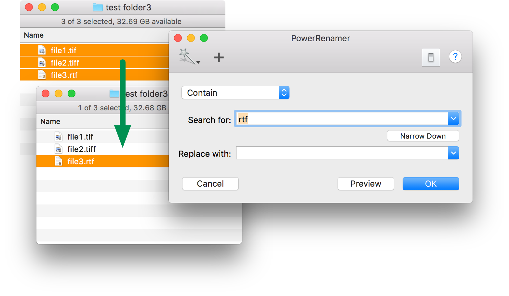

The first step to use PowerRenamer is selecting items in Finder.PowerSelect maybe help to select files to be renamed from many files. PowerSelect is an application to find items which match with specified condition in selected location of Finder , and select them.
Also PowerRenamer can narrow down selection in Finder to help specifying files to be renamed. A condition to narrow down selection is expressed by the mode popup menu and the text in "Search for" field. Pressing "Narrow Down" button cause to reselect files which are matched with the condition in selected files in Finder.
The shortcut key of "Narrow Down" button is assigned to "⌘K".
